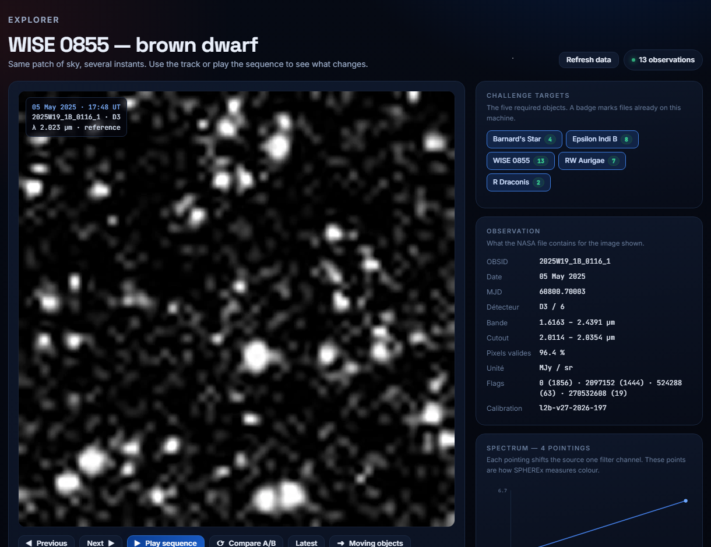
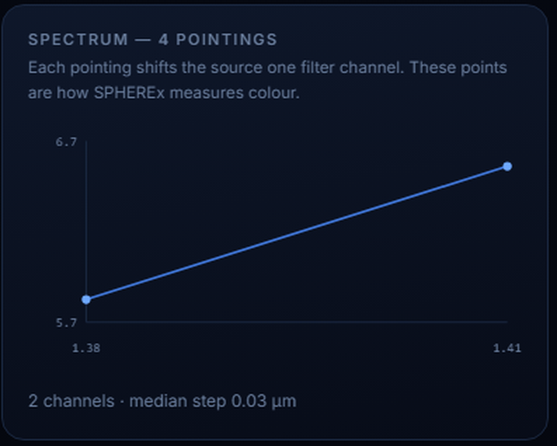
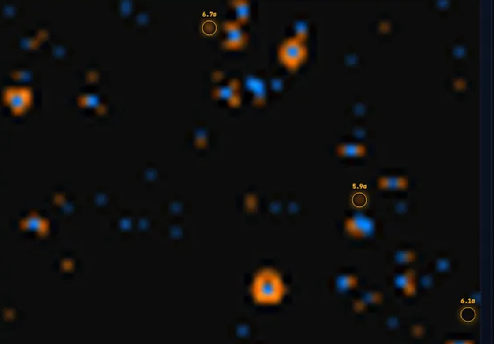
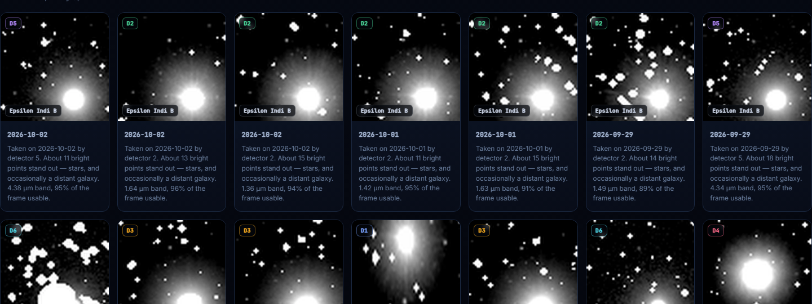

Every SPHEREx photograph of the same patch of sky, in order, in the browser: play it, blink it, and find what changed between two dates — no telescope, no download, no install.
The archive holds the motion. The tools hold one frame at a time.
A citizen opens a target, presses play, and sees the sky move.
211 real frames over the 5 challenge targets, 6 detectors, 81 nights. Previous / Next / Play sequence, and a synchronised A/B blink at identical stretch.
Sources that shift between consecutive pointings, with displacement, elapsed time and speed — the moving-object question, answered without a notebook.
Backgrounds subtracted, then source catalogues compared on a common grid: at 6.2″/px a star is one pixel. The verdict is printed — none isolated many — so no residue passes for a discovery.
102 channels rebuilt from the repointing sequence, plotted in µm and MJy/sr, wavelength computed at the source position in each pointing.

SPHEREx DR1 (l2b-v27) and QR3 through IPAC/IRSA — TAP, SIA2, cutout service — DOI 10.26131/IRSA678 / 679. Anonymous access, no key, nothing to request from NASA.
A pixel valued 2 097 152 is not noise, it carries bit 21 = SOURCE. Masking flags != 0 keeps 52.2 % of pixels and deletes the stars; flags & ~SOURCE == 0 keeps 96.3 %. The mask is a policy, and the UI shows how many pixels it withheld.
The WCS-WAVE table gives λ(x,y); cross-checked against the ePSF’s own CWAVE grid — slopes agree to three digits, X-dependence exactly zero. A small slew shifts the source by exactly one channel (Δλ = 0.0341 µm): a spectrum is a time series, not an image slice.



A student compares two NASA epochs in ten seconds, in French or English, with no install and no account. The image is real, the pixels are explained: 6.2″ each, flags and all.
A researcher screens candidates before downloading 71 MB MEFs. An explicit verdict — none, isolated, many — is the difference between a queue of candidates and a queue of false alarms.
The mask, render, WCS and difference core is data-agnostic: any SPHEREx cutout, any IFU with a WCS-WAVE table, any archive that stores the same object more than once.
Data: NASA/JPL-Caltech, processed via IPAC/IRSA. No NASA logo, flag or mission identifier is used in this project’s branding — attribution is textual, as the Space Apps brand guidelines require.